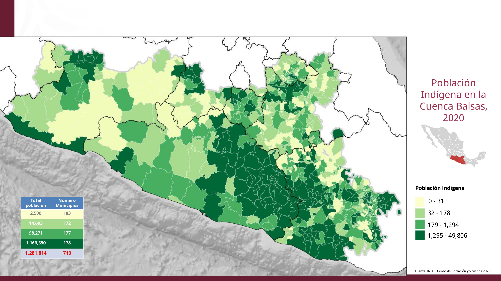
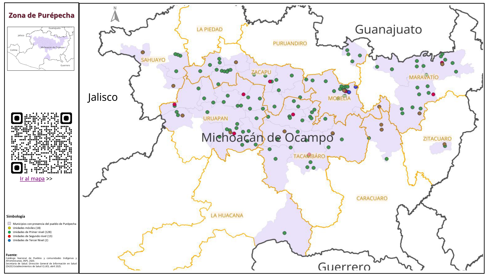
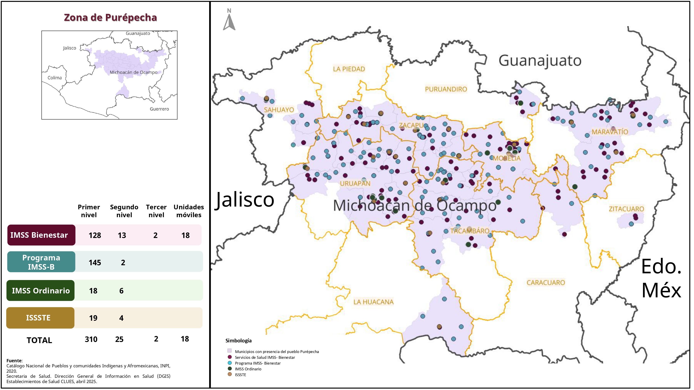
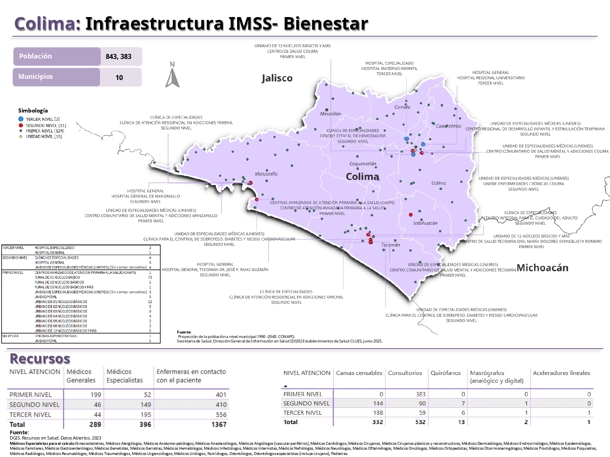

Mapa para el proyecto de la Cuenca del Rio Balsas
Toca para ampliar

Mapa para el estudio de la zona Purepecha
Toca para ampliar

Mapa para el estudio de la zona Purepecha
Toca para ampliar

Infraestructura de unidades médicas en Colima
Toca para ampliar
×
Deslice para ver más